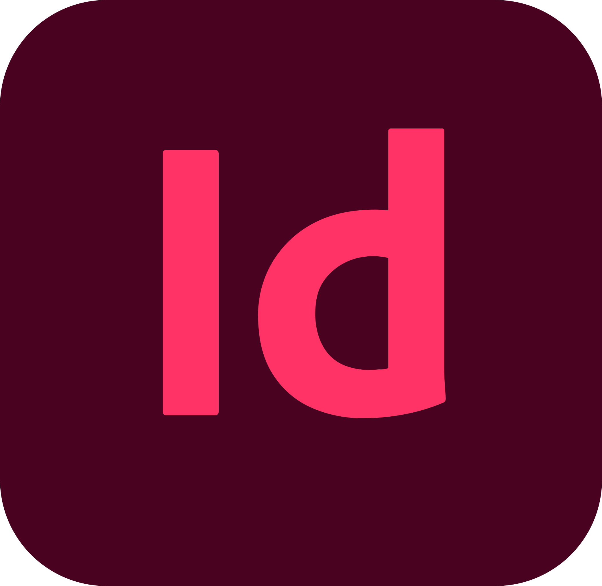
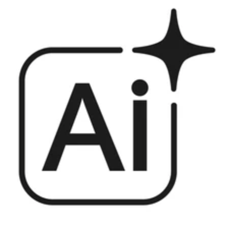

Lara Marco Simó
Doble grado en diseño gráfico digital y publicidad
SOBRE MÍ
Con experiencia en edición y una profunda pasión por la creatividad, estoy entusiasmada por aportar mis habilidades y mi visión innovadora al equipo. Actualmente, curso el doble grado en diseño gráfico digital y publicidad, donde desarrollo proyectos que fusionan la estética visual con estrategias de comunicación efectivas.
Nacimiento: 05/05/2003
Nacionalidad: Española
Carnet: Tipo B1
EDUCACIÓN
Doble grado en diseño gráfico digital y publicidad
2022 - HoyAhoraUniversidad Europea | Santa Cruz de Tenerife
Prácticas en Arco Comunicación
2024Agencia de Publicidad | Santa Cruz de Tenerife
1º Curso del grado en Tecnologías Interactivas
2022UPV | Valencia
Título de Bachillerato
2021La Salle San Ildefonso | Santa Cruz de Tenerife
Título de Educación Secundaria Obligatoria
2019Colegio Adonai | Santa Cruz de Tenerife
EXPERIENCIA LABORAL
Gestión de Redes Sociales
Gestión y estrategia de redes sociales para clínica de medicina estética.
Arco Comunicación
2025Prácticas Profesionales | Agencia de Publicidad
Desarrollo de piezas gráficas y apoyo en la ejecución de campañas publicitarias creativas.
Edición de podcast
2024Desde Mi Experiencia | Santa Cruz de Tenerife
Proyecto colaborativo asegurando una producción de audio de alta calidad y edición profesional.
HABILIDADES

"Retoque digital y composición de piezas visuales con narrativa."

"Diseño de identidad visual, logotipos y sistemas vectoriales escalables."

"Conocimientos básicos en la creación de documentos, dossiers y maquetación de páginas, con enfoque en el orden y la claridad visual."

"Motion Graphics y animación de elementos para dar vida al diseño estático."

"Montaje rítmico y narrativa audiovisual para contenidos."

"Integrada para creación de mockups y eficiencia técnica, sin sustituir el proceso creativo original."
Habilidades Estratégicas
Optimización de tiempos y organización de proyectos.
Transformo ideas en sistemas visuales con propósito.
Versatilidad entre diseño estático y formatos de vídeo.